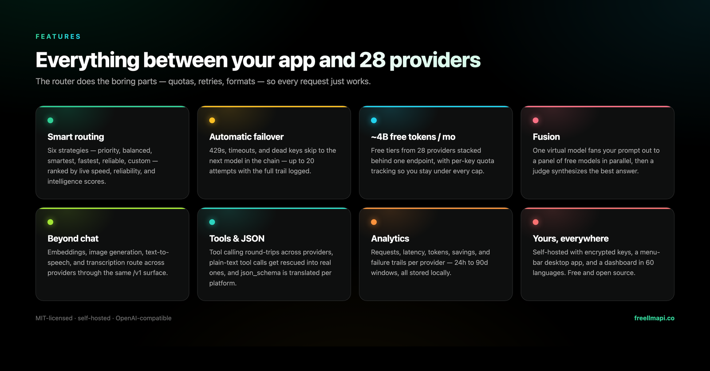
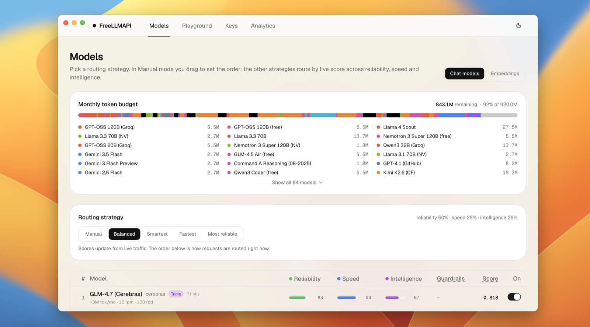

FreeLLMAPI: 635 Free Model Endpoints Behind One /v1 URL
FreeLLMAPI (GitHub, MIT) is a self-hosted proxy that stitches the free tiers of 34 LLM providers into a single OpenAI-compatible endpoint. The headline numbers: ~7.4 billion tokens per month of combined free quota, 474 model families, 635 free endpoints — all reachable at one /v1 base URL with one unified API key. It's sitting at roughly 19.7k GitHub stars four months after the first commit, and it's pushing releases daily.
The pitch is honest about what it is: a router for personal experimentation, not production. You register free accounts at the providers you want (Groq, Google, Cerebras, Mistral, OpenRouter, GitHub Models and so on), drop the keys into an encrypted local store, and every app that speaks OpenAI — Claude Code, Codex CLI, Aider, Cursor, plain SDK code — points at localhost instead of juggling a dozen base URLs and rate limits.
Why you'd actually use it
- Coding agents without a billing account. Run Claude Code or Codex CLI against the free pool. One command (
npx freellmapi setup-claude) writes the config; when Groq rate-limits you mid-task, the router fails over to the next model in your chain instead of erroring out. - Prototype apps on free quota. Point any OpenAI SDK at
http://localhost:3001/v1. Per-key RPM/RPD/TPM/TPD tracking keeps each request under every provider's cap automatically, so you don't have to hand-manage quotas across ten dashboards. - Kill key sprawl. Provider keys are AES-256-GCM encrypted in SQLite; your apps only ever see one unified bearer token. Revoke it in the dashboard and everything stops at once.
- A/B answers with Fusion. Request the virtual
fusionmodel and the router fans your prompt out to a panel of diverse free models in parallel, then a judge model synthesizes one answer. Great for "which of these summaries is right" moments. - More than chat. The same endpoint serves embeddings, image and video generation, speech and transcription — routed across whichever providers offer those media models for free.

Getting started
- Run the one-liner (Docker required). It creates
~/freellmapi, generates an encryption key, pulls the image, and starts the container:curl -fsSL https://freellmapi.co/install.sh | bashRe-running it is safe: your
.envsurvives and the container updates to:latest. - Open the dashboard and add provider keys:
# browse to http://localhost:3001Add keys on the Keys page, reorder the Fallback Chain to taste, then copy the unified API key from the Keys page header.
- Point a client at it. Anything OpenAI-compatible works — set the base URL to
http://localhost:3001/v1with your unified key. For coding agents there are generators:npx freellmapi setup-claude --url http://localhost:3001 --api-key <unified-key>Codex, Cline, Continue, Aider, opencode, Goose, Qwen Code, Roo, Cursor and more each have a matching
setup-*generator (see docs/clients.md). Every generator supports--dry-runand backs up existing config first. Prefer zero config files? Use the launchers:npx freellmapi launchinjects credentials into Claude Code's process only. - Smoke-test from curl:
curl http://localhost:3001/v1/chat/completions \ -H "Authorization: Bearer $FREELLMAPI_KEY" \ -H "Content-Type: application/json" \ -d '{"model": "auto", "messages": [{"role": "user", "content": "hello"}]}' - On Windows, the easiest path is the desktop
.exeinstaller from Releases — the whole router plus dashboard runs from your system tray with a live-stats popover. No account needed; the tray shows your unified key.# macOS .dmg / Windows .exe from: # https://github.com/tashfeenahmed/freellmapi/releases/latest

Code & config samples
Standard Python client, no special SDK:
from openai import OpenAI
client = OpenAI(
base_url="http://localhost:3001/v1",
api_key="freellmapi-...", # your unified key
)
resp = client.chat.completions.create(
model="auto:coding", # named fallback-chain profile
messages=[{"role": "user", "content": "refactor this fn"}],
)
print(resp.choices[0].message.content)Switch routing strategy per request via profiles — define a "vision" chain in the dashboard and call it as model="auto:vision". Sticky sessions keep a conversation pinned to one model for 30 minutes, with an optional compact context-handoff note if the router does switch mid-thread. Agents can also introspect available models and provider health over the built-in MCP server at /mcp.
What's new
v0.8.7 landed August 24, 2026, and it's mostly about making the desktop app behave like the server. The embedded server now runs the full boot sequence, which fixes four things that were silently desktop-only broken: automatic backups never fired (the scheduler job wasn't started), the dashboard Logs page stayed empty, a crashed provider socket could take down the whole app, and waking from sleep stalled until the next health cycle — stale sockets are now flushed and keys re-probed immediately. There's also a new "Open Backups Folder" tray item.
Same-day commits include "Make a fallback chain mean itself, empty or not" (#1023 — chains created from the dashboard start empty and previously misbehaved), French locale completion, full-width first paint on page load, and secondary routing knobs tucked behind "More options". Development is fast: 637 commits since April.
Troubleshooting
- Claude Desktop / agent discovers zero usable models. Seen around v0.7.0 (issue #880): some clients filter the
/v1/modelslist aggressively. Regenerate the client config with the currentsetup-*generator rather than hand-editing, and confirm the catalog synced on the dashboard's Models page. - Keys show 401 during health checks. Issue #976 tracked CI failing because Groq/Google keys returned 401 — usually an expired, revoked, or wrong-org key rather than a router bug. Delete and re-add the key; check the provider console for quota revocations.
- macOS window won't appear (arm64 builds on newer macOS). Older installers had this on macOS 26 (issue #807). Grab the latest release — v0.8.7 fixed several desktop-only startup paths.
- Rate-limit errors despite "automatic failover." Failover retries the next model on 429/5xx with cooldowns, but if all keys in a chain are exhausted you'll still get errors. Check the per-key budget legend on the dashboard and widen the chain — and note the #1023 fix if you created an empty chain from the UI.
- CSP errors on a Windows source build. Git for Windows'
core.autocrlf=truerewrote line endings and broke CSP hashes (#784). The repo now pins LF via.gitattributes— re-clone fresh rather than converting files by hand.
One last thing worth repeating: the README is explicit that this is for personal experimentation. Free tiers aren't a supported inference substrate — swap in a paid API before anything ships — and upstream providers' terms still apply to traffic proxied through it. The repo even includes a provider-by-provider ToS review if you want the details.